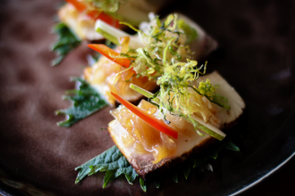
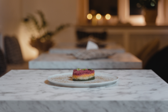

Japanese

Non-Japanese
Meat-eater
Vegetarian
Vegan
Low
Medium
High
"This is a true place for meatlovers! 100% Japanese beef cooked by top chefs." - Yusuke, 37
"If you come to Tokyo only to try one place, this 2-star michelin is the one!" - Yuka, 42
"People might not think of vegan food when they come to Tokyo, but this place is a must for both meat-eaters and vegans!" - Misa, 27
More than any one sight, it's the city itself that enchants visitors. It's a sprawling, organic thing, stretching as far as the eye can see. Always changing, and with a diverse collection of neighbourhoods, no two experiences of the city are ever the same.
Some neighbourhoods feel like a vision from the future, with ever taller, sleeker structures popping up each year; others evoke the past with low-slung wooden buildings and glowing lanterns radiating surprising warmth; elsewhere, drab concrete blocks hide art galleries and cocktail bars and every lane hints at possible discoveries.
But we're not just talking about the famous restaurants and the celebrity chefs: what Tokyo excels at is consistency across the board. Wherever you are, you're usually within 100m of a good, if not great, restaurant.
It's a scene that careens nonchalantly between the highs and lows: it's not unusual for a top-class sushi restaurant to share the same block as an oil-spattered noodle joint, and for both to be equally adored. Tokyoites love dining out; join them, and delight in the sheer variety of tastes and experiences the city has to offer.